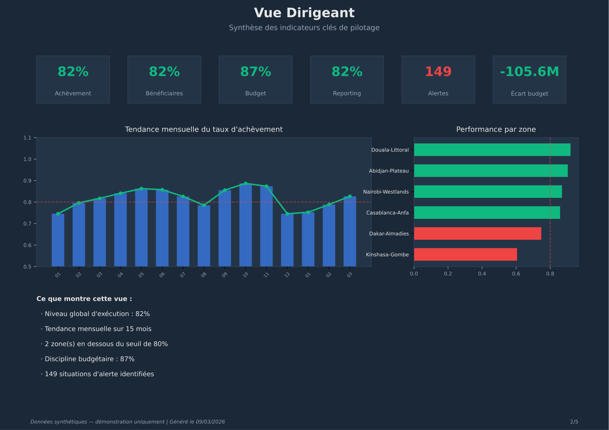
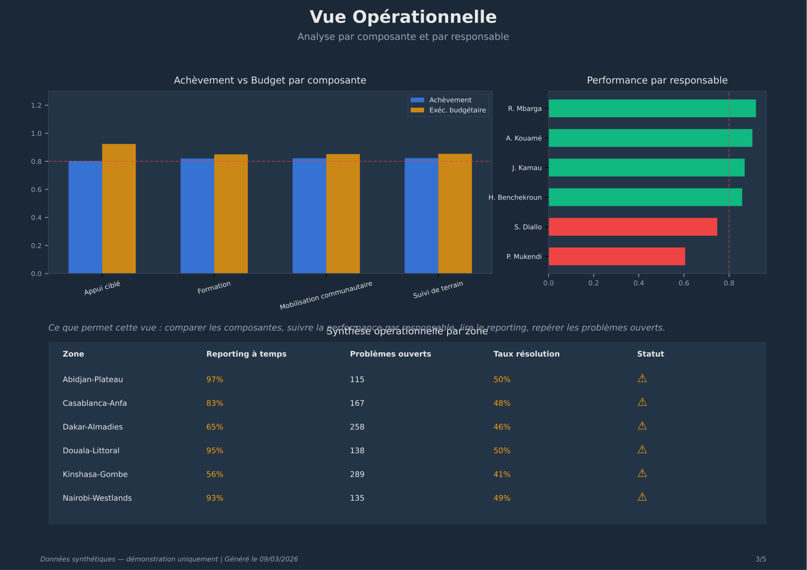

Transformez des données dispersées en tableau de bord décisionnel structuré, avec alertes automatisées et PDF exportable.

Cette approche s'adresse à toute structure qui pilote des programmes, des budgets ou des équipes multi-zones.
« Nos indicateurs sont dispersés dans des tableurs. La direction n'a pas de vue consolidée pour piloter. »
« On consolide manuellement les performances de chaque zone. Ça prend du temps et c'est source d'erreurs. »
« Je veux une page claire avec mes KPI, pas un tableur de 15 onglets. »
« J'ai besoin de détecter les zones qui décrochent avant qu'il ne soit trop tard. »
« Le suivi budgétaire doit être croisé avec la performance opérationnelle. »
Le même besoin de pilotage, mais structuré, automatisé et exploitable.
Voici des livrables réels, produits à partir d'un dataset synthétique de suivi de programme.
6 indicateurs clés, tendance mensuelle sur 15 mois, classement des zones par performance.
Ce que cette démonstration contient :
Toutes les données sont synthétiques et générées à des fins de démonstration uniquement.

Performance par composante, par responsable, état du reporting et suivi des problèmes.
Enseignements, vigilances et usages — traduits en langage de direction.
Un système complet de pilotage, du dataset brut au document partageable.
Dashboard Power BI avec 6 KPI, filtres par zone, période et composante. Prêt pour la direction.
Rapport exportable : couverture, vue dirigeant, vue opérationnelle, lecture décisionnelle, périmètre.
Détection automatique des zones en difficulté sur 5 critères : exécution, bénéficiaires, budget, reporting, incidents.
Vue exécutive, performance par zone, budget vs résultats, heatmap alertes, vue opérationnelle.
Génération → préparation → visualisation → PDF → validation QA. Reproductible à chaque période.
29 vérifications automatiques sur les données, les calculs et les livrables générés.
Un processus en 5 étapes, des données brutes au tableau de bord décisionnel.
Vos fichiers Excel ou CSV existants
Dimensions + tables de faits structurées
Mesures DAX et alertes automatisées
Tableau de bord interactif Power BI
Rapport exportable + validation qualité
Je transforme vos données de programme en tableau de bord décisionnel structuré — avec des KPI clairs, des alertes automatisées et un PDF partageable. Pas de complexité inutile, juste ce qu'il faut pour piloter.
Non. Toutes les données sont synthétiques et générées uniquement à des fins de démonstration. Elles simulent un programme multi-zones sur 15 mois avec des patterns réalistes (saisonnalité, variations de performance, alertes).
Power BI permet l'interactivité (filtres, drill-down). Mais les graphiques et le PDF sont générés indépendamment en Python. Vous recevez donc des livrables exploitables même sans licence Power BI.
Le modèle s'adapte à tout programme structuré par zones, composantes et périodes. ONG, PME multi-sites, programmes de développement, projets de santé publique — la logique de pilotage est la même.
Pour un programme de taille modérée (5-10 zones, 3-5 composantes), la mise en place peut se faire en 2 à 4 semaines, selon la complexité des données et le niveau de personnalisation attendu.
C'est justement l'objectif. Vos équipes continuent à saisir normalement. La partie technique (modélisation, calculs, alertes, export) est entièrement prise en charge. Vous recevez les livrables prêts à l'emploi.
Oui. Le système peut fonctionner entièrement en local. Vos données ne quittent jamais votre environnement si vous le souhaitez. Si un hébergement est nécessaire, les données sont traitées de manière confidentielle.
Je peux adapter ce système de tableau de bord décisionnel à votre contexte : suivi de programme, pilotage multi-zones, reporting opérationnel.
Un échange de 15 minutes suffit pour voir si cette approche s'adapte à vos besoins.